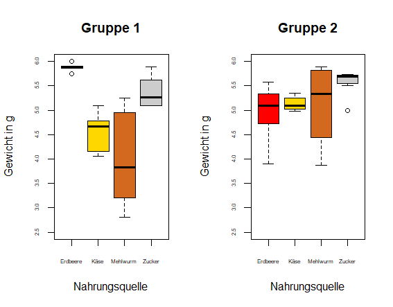

Portfolio Lydia Brundisch
Code
Experiments
Experiment on retrieval-induced forgetting of words in free recall
Experiment on the effect of emotionally incongruent facial cues on word recognition
Evaluation of model constraints of the Baumgarten-Adjektivliste in self- and acquaintance judgments
Experiment on the Posner cueing task (replication study)
Experiment on the effect of affective cues on operant learning in a predator-prey paradigm
Experiment on the food choices of Formica cf. rufa and their seasonal patterns

Writing